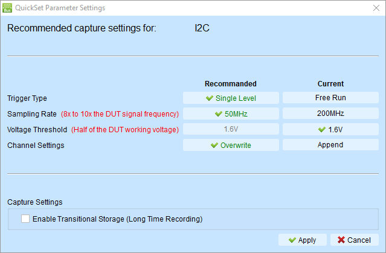

快速開始
逐步導覽，協助您使用邏輯分析儀完成首次波形擷取、分析與匯出。
開始之前
請確認您已具備：
- 邏輯分析儀硬體已插入 PC 的 USB 連接埠
- 可供測試的訊號來源（例如 I2C 感測器、SPI 裝置、振盪器等）
- 已將訊號線連接於邏輯分析儀硬體與訊號來源之間
-
已安裝最新版邏輯分析儀軟體
- 若尚未安裝，請參閱軟體安裝指南（該章節中文版尚未提供）。
本指南稍後將以 I2C 為例說明。
步驟 1：啟動邏輯分析儀模式工作階段
1.1 連接裝置
- 透過 USB 將邏輯分析儀連接至電腦
- 等待裝置驅動程式載入
- 啟動 TravelLogic 軟體
1.2 確認連線
檢查視窗底部的狀態列（status bar）：
- 綠色指示燈： 裝置已連線且就緒
- 紅色指示燈： 未偵測到裝置 — 請檢查 USB 連線
型號資訊應顯示於狀態列（例如「LA4136B Connected」）。
步驟 2：擷取設定
2.1 使用快速設定（Quick Settings）（建議初學者）
快速設定（Quick Settings）提供常見協定的預設配置，可節省手動設定的時間。它會立即配置所需通道與相關設定。設定特定匯流排解碼時，取樣率與臨界值會依預設條件自動設定。
若您要擷取常見協定（例如 I2C）：
-
點選工具列中的 快速設定（Quick Settings） 按鈕

-
從下拉清單選擇要擷取的協定。此處選擇 I2C，將會彈出視窗以設定 I2C 參數。

軟體會調整擷取設定以適用於 I2C。您可以看到：
- 取樣率（Sample rate） 從 200 MHz 設為 50 MHz（通常選擇訊號頻率的 10 倍）
- 臨界值（Threshold） 設為 1.6V（供應電壓的一半，多數情況為 3.3V）
- 觸發類型（Trigger type） 設為單階位準觸發（Single Level Trigger）（在訊號變化時協助擷取資料）
- 通道設定（Channel Settings） 顯示覆寫（Overwrite），表示軟體會以 I2C 的新設定覆寫現有通道配置。
通常 I2C 無需變更參數。點選套用（Apply）即可完成設定。
Note
您可隨時點選目前（Current）欄中列出的參數，以選取目前的設定。
-
（選用）您可啟用 過渡儲存（Transitional Storage） 以擷取更長時間的資料。目前請保持未勾選。
-
點選套用（Apply）
完成擷取設定後，請跳至 步驟 3：擷取資料（Capture Data）。
2.2 手動通道配置（進階）
如上所述，快速設定（Quick Settings）適合初學者。若您要手動配置通道，可依下列步驟操作。
針對自訂配置或快速設定（Quick Settings）中未列出的協定：
- 在通道標籤區域點選 "+"（新增標籤（Add Label））按鈕
- 選擇要監視的通道
- 點選各通道標籤重新命名（例如「Clock」、「Data」、「Enable」）
- 將探棒尖端連接至訊號來源
通道指派提示：
- 使用與電路相符的描述性名稱
- 熟悉操作前先使用較少通道（4–8 個）
- 將相關訊號分組排列
步驟 3：擷取資料
3.1 開始擷取資料
- 點選工具列中的開始（Start）按鈕（或按 Enter）
- 狀態變更為「Waiting for trigger」
3.2 觸發擷取
自動觸發：
- 在電路上產生活動（例如傳送 I2C 交易）
- 滿足觸發條件時擷取會自動停止
手動觸發：
- 點選停止（Stop）按鈕，將觸發點設於目前時刻
3.3 檢視擷取資料
擷取完成後：
- 波形顯示於波形區
- 觸發點已標記（通常位於顯示區中央）
- 狀態列顯示「Stopped」
首次使用提示：
- 使用滑鼠滾輪放大/縮小
- 按住並拖曳以左右平移
- 尋找預期的訊號型態
步驟 4：解碼協定（選用）
若您擷取了匯流排協定，可解碼以檢視交易。
4.1 新增協定解碼
若您使用了快速設定（Quick Settings）： 協定解碼已配置完成 — 跳至 8.2。
手動解碼：
- 在通道標籤區域點選 "+" → 新增協定解碼（Add Protocol Decode）
- 選擇協定類型（I2C、SPI、UART 等）
- 將通道指派至協定訊號
- 設定協定參數（鮑率、位址格式等）
- 點選 OK
4.2 檢視解碼結果
波形區：
- 協定註解顯示於波形上方
- 顯示位址、資料、ACK/NAK 等
報告區：
- 波形下方顯示詳細交易表格
- 每列代表一筆交易
- 欄位顯示位址、資料、控制訊號
4.3 解讀結果
I2C：
- 尋找 START 條件
- 檢查從屬位址（7 位元或 10 位元）
- 驗證資料位元組
- 確認 ACK/NAK 回應
SPI：
- 檢查晶片選擇（CS）斷言
- 驗證 MOSI 資料（主機 → 從屬）
- 驗證 MISO 資料（從屬 → 主機）
- 計數時脈週期
UART：
- 檢查起始/停止位元
- 驗證鮑率偵測
- 尋找框架錯誤
- 若已啟用同位檢查，請一併檢查
請參閱：匯流排解碼，了解所有支援的協定。
步驟 5：儲存與匯出
保留您的工作並分享結果。
5.1 儲存波形檔
- 點選檔案（File） → 儲存（Save）（或另存新檔（Save As））
- 選擇位置與檔名
- 儲存為 .TLW 格式（保留所有設定）
- 點選儲存（Save）
優點： 之後可重新開啟檔案，所有解碼與游標設定均完整保留。
5.2 匯出解碼報告
- 在報告區（Report Area）中，點選儲存（Save）按鈕
- 選擇 CSV 或 TXT 格式
- 選擇位置與檔名
- 點選儲存（Save）
使用情境：
- 匯入 Excel 進行分析
- 納入測試報告
- 與團隊成員分享
5.3 匯出至其他工具
波形檢視器（GTKWave 等）：
- 點選檔案（File） → 另存新檔（Save As）
- 選擇 Value Change Dump (*.vcd) 格式
- 儲存檔案
MATLAB 分析：
- 點選檔案（File） → 另存新檔（Save As）
- 選擇 MATLAB array file (*.m) 格式
- 儲存檔案
詳見：匯出資料（Export Data） 了解所有匯出選項。
步驟 6：進階分析（選用）
游標可讓您精確量測事件之間的時間。
6.1 新增游標
- 按住 Shift 鍵
- 在波形上點選以放置第一個游標（Cursor 1）
- 再次點選以放置第二個游標（Cursor 2）
結果： 時間差（ΔT）顯示於螢幕底部。
6.2 移動游標
- 按住並拖曳游標線以重新定位
- 或使用方向鍵微調（需先選取游標）
6.3 常見量測
量測時脈週期：
- 將 Cursor 1 置於上升邊緣
- 將 Cursor 2 置於下一個上升邊緣
- ΔT = 時脈週期
- 頻率 = 1 ÷ ΔT
量測脈衝寬度：
- 將 Cursor 1 置於上升邊緣
- 將 Cursor 2 置於下降邊緣
- ΔT = 高電位脈衝寬度
量測建立時間（setup time）：
- 將 Cursor 1 置於資料變化處
- 將 Cursor 2 置於時脈邊緣
- ΔT = 建立時間
詳見：游標量測（Cursor Measurements） 了解進階游標操作。
步驟 6.4：使用統計與量測
對訊號產生自動化量測。
6.4.1 開啟波形統計
- 在報告區工具列（Report Area toolbar）中，選擇波形資料統計（Waveform Data Statistics）
- 選擇要量測的通道
- 從下拉清單選擇量測類型
6.4.2 常見量測
頻率量測：
- 選擇通道（例如 Clock 訊號）
- 選擇頻率（Frequency）量測
- 結果顯示於報告區
週期量測：
- 選擇通道
- 選擇週期（Period）量測
- 顯示連續邊緣之間的時間
脈衝寬度：
- 選擇通道
- 選擇正脈衝寬度（Positive pulse width）或負脈衝寬度（Negative pulse width）
- 顯示高/低電位持續時間
6.4.3 通道間延遲
量測兩個訊號之間的時序關係：
- 選擇第一個通道
- 選擇延遲量測類型（例如「Channel rising to channel falling delay」）
- 提示時選擇第二個通道
- 延遲時間顯示於報告中
詳見：報告區 — 波形統計（Report Area - Waveform Statistics） 了解所有量測類型。
後續步驟
提升技能
- 嘗試不同觸發類型： 多階觸發適用於複雜條件
- 探索擷取模式： 同步模式（Synchronous mode） 用於狀態分析
- 學習註解： 新增文字與圖形以記錄發現
- 精通游標： 使用多個游標進行平行量測
進階功能
- 電源序列時序驗證（Power sequence timing validation）：以水平時序驗證自動化檢查
- 混合訊號分析： 搭配 堆疊示波器（Stack Oscilloscope） 使用
- 毛刺濾波： 使用硬體/軟體濾波器（Hardware/Software filters）去除雜訊
- 自訂報告： 建立自訂解碼報告
練習情境
情境 1：驗證 I2C 通訊
- 設定 I2C 解碼
- 擷取感測器讀取交易
- 驗證位址與資料位元組
- 量測時脈頻率與工作週期
情境 2：除錯 SPI 時序
- 設定 SPI 解碼
- 在建立時間與保持時間處放置游標
- 驗證時序符合資料手冊規格
- 匯出時序量測結果
情境 3：分析 UART 問題
- 以已知鮑率設定 UART 解碼
- 擷取通訊
- 檢查框架錯誤
- 量測實際與預期鮑率
疑難排解提示
問題：擷取無法觸發
- 檢查觸發通道是否已連接
- 確認訊號有活動（產生轉換）
- 嘗試手動觸發以完成擷取
- 將觸發 Pass Count 設為 0
問題：波形看起來有雜訊
- 檢查探棒連接（線材是否鬆脫？）
- 確認臨界值電壓正確
- 嘗試 毛刺濾波器（Glitch Filter）
- 提高取樣率
問題：解碼顯示錯誤
- 確認通道指派正確
- 確認取樣率足夠高（≥10× 訊號頻率）
- 確認協定設定（鮑率、時脈極性等）
- 確認臨界值電壓符合邏輯家族
問題：無法看到足夠的波形
- 提高記憶體深度設定
- 調整觸發位置（增加觸發後百分比）
- 使用 過渡儲存（Transitional Storage） 進行較長時間擷取